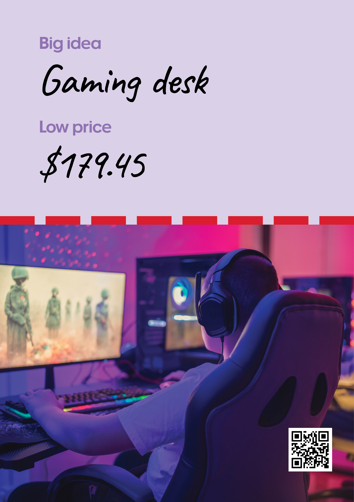
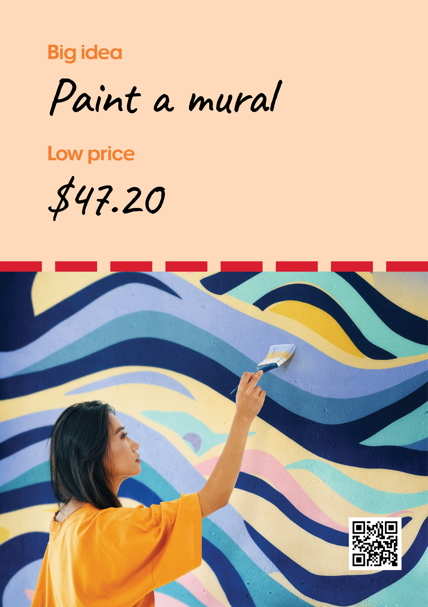
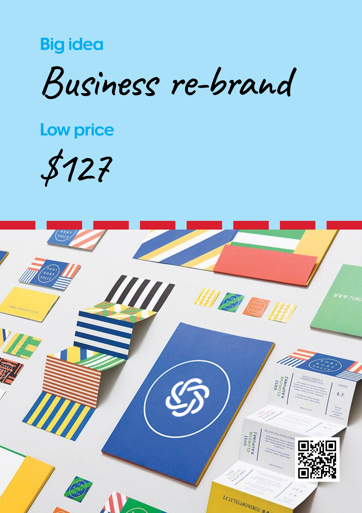

Value campaign development
Officeworks
Creative direction and ideation for an Officeworks campaign focused on demonstrating value through individual projects, from low-cost craft ideas to full tech re-fits. These concepts were developed through to final creative, but the campaign was ultimately not released.
Instore posters



Organic and paid social videos
Instore screens